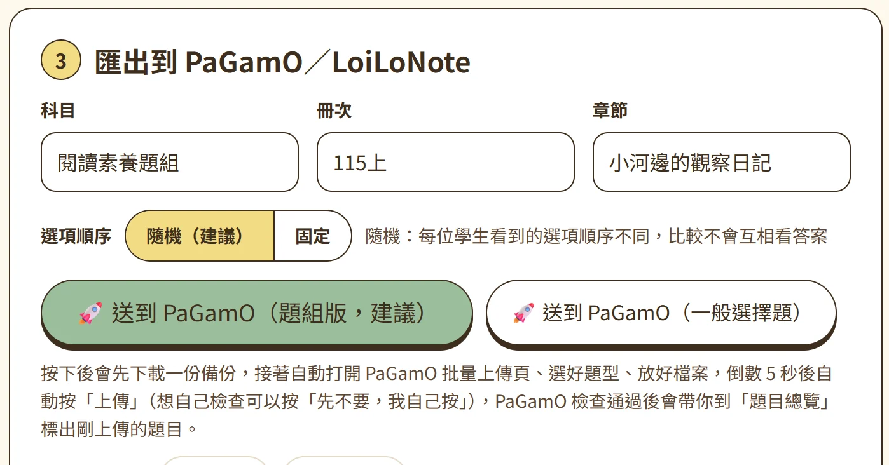
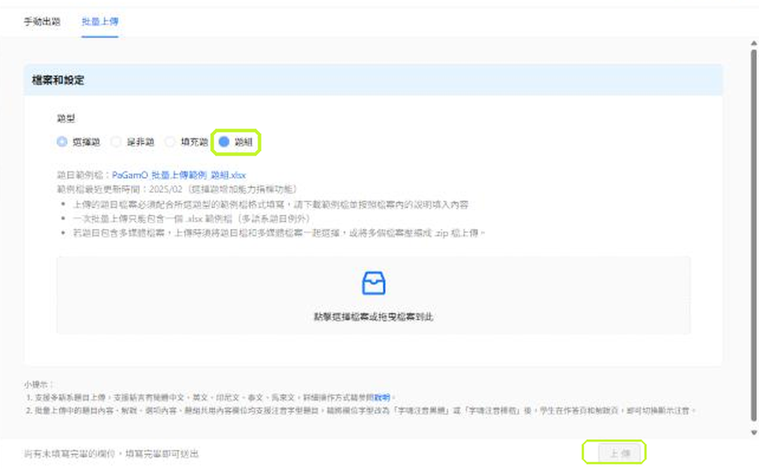
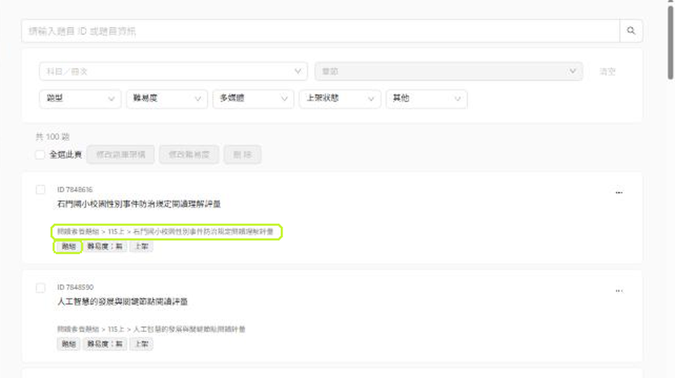
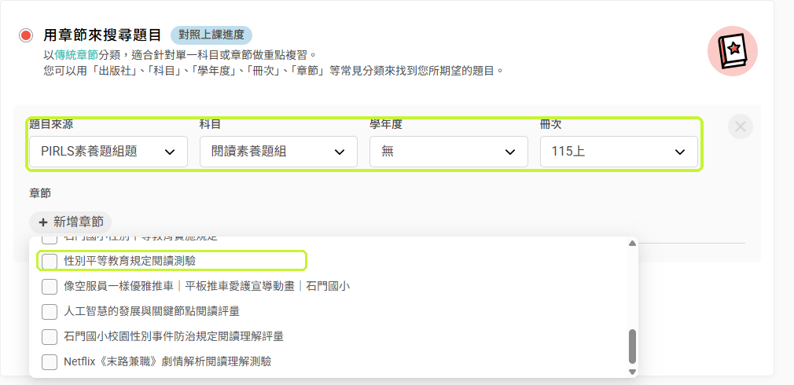
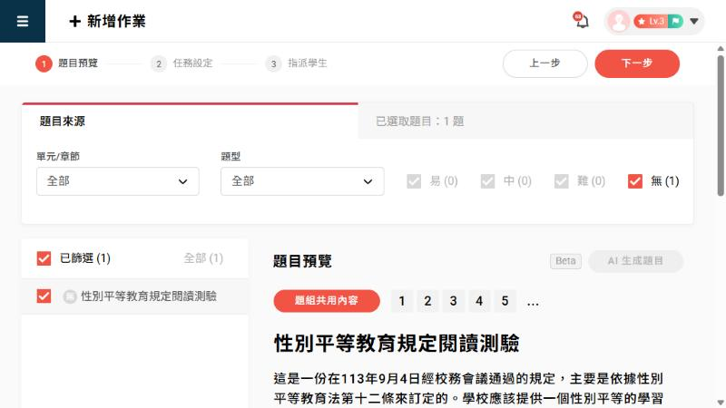
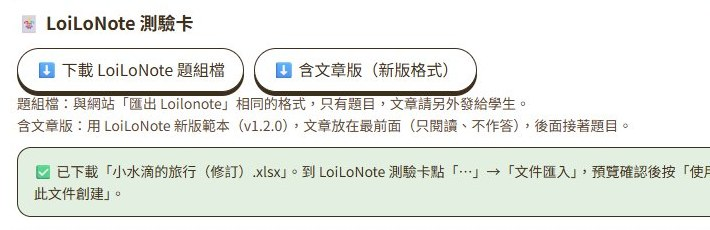
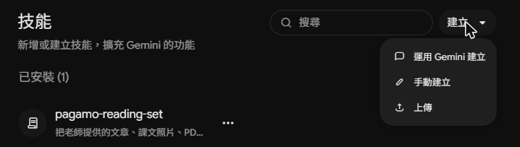
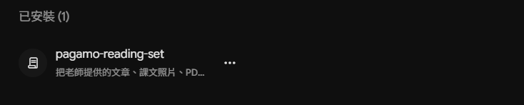
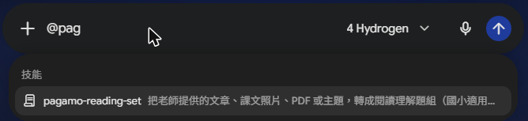
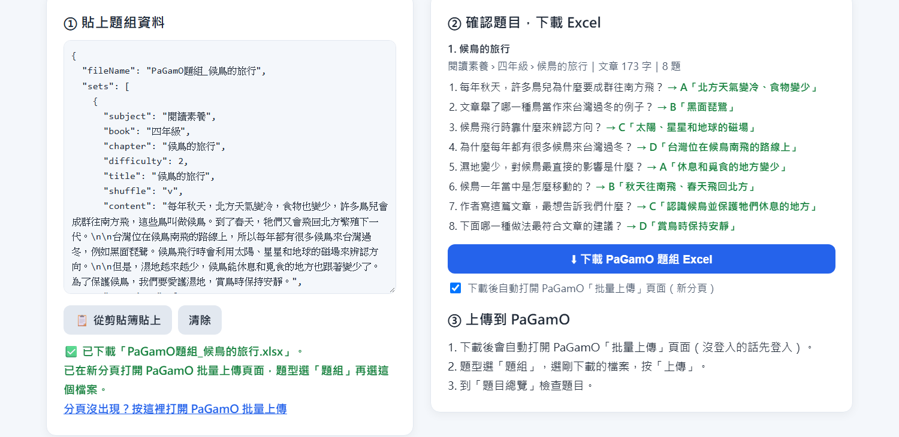

NTPC TEACHER WORKSHOP · 2026.12.02 WED 14:00–16:00ONLINE · GOOGLE MEET
新北市教師線上研習
教學效率升級
PaGamO 實用攻略
出題效率翻倍
×2出題效率
從文章到題組目標：手動出題的一半時間
Today's dashboard
今天的兩個小時
14:00–14:088′開場・破冰文字雲講述＋互動
14:08–14:1810′為什麼出題這麼累・PIRLS 四層次講述
14:18–14:4527′單元一 PIRLS 閱讀題組小幫手（擴充套件）講述＋示範
14:45–15:0015′實作 現場安裝，用自編短文出 5 題動手做
15:00–15:1010′休息・安裝問題個別處理休息
15:10–15:3525′單元二 PaGamO 教師後台：上傳題組講述＋示範
15:35–15:5015′單元三 Gemini 技能＋題組下載器示範（彈性）
15:50–16:0010′Q&A・會後回饋問答＋投票
Speaker
我是阿凱老師
桃園市龍潭區石門國民小學
資訊組長。學校是「鱻魚特色學園」，每天在第一線用 AI 備課、做教具、處理行政。PaGamO Level 3 領航家
在學校推 PaGamO，和大家一樣遇過「題目從哪裡來」的問題。自己動手做工具
好文章到處都是，變成題組卻很花時間，所以做了今天要介紹的兩個小工具。
MORE TOOLS
阿凱老師教育科技創新專區
cagoooo.github.io/Akai
Pain points
好文章到處都有，題組很難出
01
文字要重打
電子書、PDF、學習單常常不能複製，只好一個字一個字打。
02
四個層次難兼顧
找答案的題目好出；要推論、統整、評論的題目最花腦力。
03
上傳格式麻煩
批量上傳範本欄位固定，文章、題目、選項、答案要一格一格貼。
PIRLS · 4 levels
PIRLS 四個理解層次
L1
訊息提取
找出文中明確寫出的資訊
L2
直接推論
把前後文連起來，推出沒直接寫的事
L3
詮釋整合
統整全文，理解主旨、人物感受
L4
評估批判
評論內容、寫法與作者觀點
| 擴充套件的題數 | L1 | L2 | L3 | L4 |
|---|---|---|---|---|
| 5 題（快速） | 2 | 1 | 1 | 1 |
| 8 題（標準，預設） | 2 | 2 | 2 | 2 |
| 10 題（延伸） | 3 | 3 | 2 | 2 |
Two routes
今天的兩條路，終點都是 PaGamO
路線 A
擴充套件 網頁截圖、全文、反白、YouTube、雲端 PDF› 小幫手依 PIRLS 出題› 老師檢查修改› 自動上傳到 PaGamO
擴充套件 網頁截圖、全文、反白、YouTube、雲端 PDF› 小幫手依 PIRLS 出題› 老師檢查修改› 自動上傳到 PaGamO
路線 B
Gemini 技能 在 Gemini 貼文章、照片或 PDF› @技能 出題，得到題組資料› 題組下載器轉成 Excel› PaGamO 批量上傳
Gemini 技能 在 Gemini 貼文章、照片或 PDF› @技能 出題，得到題組資料› 題組下載器轉成 Excel› PaGamO 批量上傳
A 適合：能在自己的電腦裝 Chrome 擴充套件，想一路自動做到上傳。
B 適合：不方便裝擴充套件，或習慣在 Gemini 裡工作。
01
PIRLS 閱讀題組小幫手
Chrome 擴充套件・免費・用老師自己的 Gemini 金鑰
素材網頁上的文章
›
出題依 PIRLS 四層次
›
檢查老師逐題把關
›
送出自動上傳 PaGamO
Step 1 · Input

五種方法，把文章交給小幫手
截取這個畫面
電子書、PDF 都行，到工作台框出文章範圍；快捷鍵 Alt+Shift+P。讀取這頁全文
新聞、部落格最好用，一鍵帶入正文。反白文字
反白一段，按右鍵「用這段文字出 PIRLS 題組」。YouTube 影片
影片頁按「用這部影片出題」，只能用公開影片，可只選一段。雲端硬碟 PDF（0.10.11 起）
在 PDF 預覽頁按「讀取這頁全文」，會自動翻完全部頁面再讀，約 10～20 秒。
Step 2 · Settings
出題前的三個選擇
適讀年級
原文，或改寫成一～六年級
一年級 約 150～300 字
三年級 約 400～650 字
四年級 約 600～900 字
六年級 約 900～1400 字
三年級 約 400～650 字
四年級 約 600～900 字
六年級 約 900～1400 字
選了年級，AI 先把文章改寫成該年級讀得懂的版本，再依同一年級出題。
題數
5／8／10 題
8題預設：四層次各 2 題
短文或暖身用 5 題，長文用 10 題。
語言
中文／英文題目
英文課也能用同一套流程。
每題固定 4 個選項；四層次配錯時，小幫手會自動重出一次。
Live demo DEMO
從一篇短文到 PaGamO 題目總覽
- 打開自編短文〈雨水撲滿〉（練習頁）
- 按工具列圖示 →「📖 讀取這頁全文」
- 選 5 題、適讀年級「四年級」→「✨ 開始出題」
- 逐題看，示範改一題（改完自動儲存）
- 按「🚀 送到 PaGamO（題組版，建議）」
- 倒數 5 秒自動「上傳」→ 跳到題目總覽，橘框標出新題組
Step 3 · Review

AI 出題，老師把關
閱讀引導（學生作答後看到）：只說回到哪一段、找什麼，不說出答案。
🔍 答案依據：只有老師看得到、不會匯出，用來核對正解。
送出前看這五件事
① 題幹看得懂，只有一個正解
② 正解在文章裡找得到線索
③ 選項長度差不多，猜不出答案
④ 閱讀引導沒有洩漏答案
⑤ PIRLS 層次標對了（可以改）
Step 4 · Send
一鍵送到 PaGamO

1先下載一份備份到電腦
2自動打開 PaGamO 批量上傳頁
3自動選好「題組」、放好檔案
4倒數 5 秒自動「上傳」，跳到題目總覽
新北老師：先用新北市帳號登入 PaGamO 再按送出。
科目預設「閱讀素養題組」、冊次自動填學期（如 115上）、章節＝文章標題；選項順序預設隨機。
Hands-on 15 MIN
現在換你：裝起來，出 5 題
Troubleshooting
卡住了？先看這裡
| 狀況 | 怎麼辦 |
|---|---|
| 學校電腦不能從商店安裝 | 說明頁有手動安裝步驟；或回家用自己的電腦裝。也可以改走單元三的 Gemini 技能。 |
| 找不到小幫手圖示 | 按 Chrome 右上角拼圖圖示，把「PIRLS 閱讀題組小幫手」釘到工具列。 |
| 金鑰測試沒成功 | 確認是用個人 Gmail 申請、複製完整（不多空白）；再按一次「💾 儲存並測試」。 |
| 讀全文抓到的字太少 | 網頁文字少於 80 字時會提醒你改用「📷 截取這個畫面」。 |
| 共用電腦用完 | 到設定頁按「🧹 清除金鑰」。 |
02
PaGamO 教師後台：上傳題組
不管走哪一條路，最後都是這個畫面
WHERE
批量上傳頁在哪裡
FORMAT
題組 Excel 長什麼樣
CHECK
上傳後怎麼檢查
Login · NTPC
新北老師：從「新北市親師生平台」登入
出題前就先登入好：擴充套件按「送到 PaGamO」時，同一個 Chrome 已登入 PaGamO 最順。
桃園等其他縣市的登入方式不一樣，以各縣市平台為準。
Where · Batch upload
批量上傳：題型記得改成「題組」

Format · Template
題組 Excel：一篇文章＋好幾題
| 編號 | 這一列放什麼 |
|---|---|
| 1 | 題組本身：科目、冊次、章節、難度、標題、內容（文章）、內容附圖 |
| 1_1 | 第 1 題：題目、選項 A～E、正確答案、文字解說、選項排列 |
| 1_2 | 第 2 題…… |
| 2 | 下一篇文章（一個檔案可放好幾篇） |
不用自己填：擴充套件和題組下載器都會用 PaGamO 官方題組範本自動填好。
正確答案填字母（A～E）；選項排列 v＝打亂、x＝固定。
文章附圖：在「內容多媒體檔名」填檔名，圖片和 Excel 一起選上傳；PaGamO 會把圖縮成 600 像素寬。
一次上傳最多 1,000 列。
Check · Overview
上傳後：到「題目總覽」檢查

115上 > 章節路徑與題組標籤" />上傳後先顯示「正在檢查檔案」，再出現「檔案檢查通過」
左側「題目總覽」：卡片有題目 ID、標題、科目 › 冊次 › 章節和「題組」標籤
點題目卡片，右邊打開「查看題目」逐題核對
要刪除：卡片右邊「…」→「刪除此題」
Assign · Step 1
派給學生①：在「新增作業」找到自己的題組

1左側「作業與任務管理 →新增作業」
2選「用章節來搜尋題目」
3題目來源「PIRLS素養題組題」→ 科目「閱讀素養題組」→ 學年度「無」→ 冊次「115上」
4「＋新增章節」勾選題組（章節＝文章標題）→「下一步」
Assign · Step 2
派給學生②：預覽、命名，再指派

配題設定：手動選題／難易度配題／全自動配題（一個題組算 1 題）
1題目預覽：左邊勾題組，右邊看文章和每一題
按「下一步」→ 為作業命名（自動存進「作業清單」）
2任務設定 → 3指派學生
②③ 現場示範（畫面不開學生名單）。
Bonus · LoiLoNote
同一份題組，也能變 LoiLoNote 測驗卡
⬇️ 下載 LoiLoNote 題組檔：只有題目，文章另外發給學生
⬇️ 含文章版（新版格式）：文章放在最前面，讀完再作答；超過 1000 字自動分段
下載後自動開 LoiLoNote 新分頁 → 測驗卡「…」→「文件匯入」→「使用此文件創建」

Before / After · 拖拉下方滑桿
BEFOREAFTER
同一篇文章，出題流程的轉變
以前：全部自己來
- 找文章，不能複製就自己打字
- 自己想題目，還要兼顧四個層次
- 下載批量上傳範本，一格一格貼文章、題目、選項、答案
- 選題型、上傳，格式錯了再重來
現在：老師當總編輯
- 在文章頁按一下，讀取全文或截圖
- AI 依四個層次起草，附閱讀引導
- 老師逐題檢查、修改，把關品質
- 一鍵送到 PaGamO，自動上傳、標出新題組
03
Gemini 技能＋題組下載器
不裝擴充套件，也能做出 PaGamO 題組
裝技能只要做一次
›
@技能出題貼文章、照片、PDF
›
下載 Excel貼進題組下載器
›
上傳PaGamO 選「題組」
Setup once · Skill
安裝技能：只要做一次
1技能教學頁按「⬇ 下載技能檔 SKILL.md」（不用解壓縮）
2打開 Gemini「技能」頁，按右上角「建立 ▾」→「上傳」
3按「檔案」選 SKILL.md（不要選資料夾）
4出現「上傳其他檔案（選用）」時什麼都不加，按「上傳」
5「已安裝」出現 pagamo-reading-set 就完成


Generate · @pag
在 Gemini 出題：第一則就寫好題數
1開新對話，輸入框打 @pag，點 pagamo-reading-set
2寫上題數再貼文章（或上傳課文照片、PDF），例如：
@pagamo-reading-set 8 題
@pagamo-reading-set 8 題
3看預覽：核對題目、正確答案、解說提到的段落
先不要打開 Canvas：Canvas 開著時，Gemini 不能使用技能。

沒寫題數時，Gemini 會先問要 5、8 還是 10 題；只給主題時，會自己寫一篇原創短文並標註「本文由 AI 撰寫」。
Convert · Downloader
題組下載器：貼上 → 下載 Excel

1Gemini 回覆裡「題組資料」右上角按「複製」
2下載器按「📋 從剪貼簿貼上」，右邊逐題核對答案
3按「⬇ 下載 PaGamO 題組 Excel」，自動打開批量上傳頁
4題型選「題組」→ 選檔案 → 上傳
題目只在你的瀏覽器裡轉成 Excel，不會送到伺服器（需要連網下載官方範本）。
Compare
兩條路怎麼選？
| A 擴充套件 | B Gemini 技能＋下載器 | |
|---|---|---|
| 要準備什麼 | Chrome＋個人 Gmail 申請的免費金鑰 | Gemini 帳號看得到「技能」（教學頁標示適用學校帳號） |
| 素材 | 網頁截圖、全文、反白、YouTube、雲端 PDF | 貼文字、課文照片、PDF，或只給主題 |
| 題數 | 5／8／10 題（8 題＝每層 2 題） | 5／8／10 題（8 題＝3／2／2／1） |
| 四層次名稱 | 訊息提取・直接推論・詮釋整合・評估批判 | 直接提取・直接推論・詮釋整合・比較評估 |
| 改寫年級 | 原文或一～六年級改寫 | 寫在訊息裡（預設四年級） |
| 到 PaGamO | 自動放檔、倒數 5 秒上傳 | 下載 Excel，手動選「題組」上傳 |
| 另外可匯出 | LoiLoNote 測驗卡 | — |